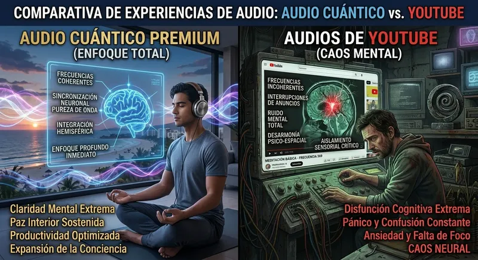

Te sientas frente al escritorio con la determinación de avanzar en tus pendientes. Abres la computadora, te colocas los auriculares y buscas en el navegador "música binaural para concentrarse" o "audio para enfocar la mente". Eliges un video con millones de reproducciones, presionas reproducir y te dispones a trabajar. Sin embargo, minutos después notas que tu atención se dispersa, aparece una leve pesadez en la vista y la frustración interrumpe tu flujo de trabajo. Es natural preguntarse por qué los audios de plataformas de streaming gratuitas no logran mantener la concentración como prometen.
El inconveniente no suele ser la falta de disciplina personal ni la capacidad intelectual. En la mayoría de los casos, la causa radica en las limitaciones técnicas de los archivos de audio distribuidos en plataformas de video masivas. Lo que se escucha en streaming no es una señal acústica intacta, sino un archivo procesado por algoritmos de compresión. Para entender cómo lograr una sincronización binaural efectiva para la concentración, es fundamental analizar la diferencia entre el audio comprimido de consumo comercial y la estimulación neuroacústica en alta definición.
La Compresión de Audio Digital: Cómo Afecta a las Frecuencias Binaurales
El principio de arrastre de ondas cerebrales (Brainwave Entrainment) requiere una alta precisión en la entrega de señales acústicas. Para inducir estados de enfoque sostenido (frecuencias Alfa de 8–12 Hz o Beta bajas de 13–15 Hz), el oído izquierdo y el oído derecho deben recibir dos tonos puros con una diferencia de hercios exacta. El cerebro procesa esta diferencia generando una respuesta de fase alineada entre ambos hemisferios.
En las plataformas de streaming gratuitas, la prioridad es optimizar el ancho de banda para transmitir miles de horas de video. Para ello, aplican códecs de compresión como AAC o MP3 que eliminan información sonora considerada "no perceptible" por el oído promedio. Sin embargo, en este proceso de codificación con pérdida (lossy), se recortan armónicos secundarios, se suavizan los pulsos isocrónicos y se alteran las fases de las ondas binaurales, reduciendo la efectividad del estímulo neurofisiológico.
⚠️ LA FATIGA AUDITIVA POR PROCESAMIENTO DIGITAL
Al escuchar un audio binaural comprimido, el sistema auditivo debe esforzarse por interpretar una señal sonora incompleta. En lugar de facilitar la relajación o el enfoque, el cerebro realiza un trabajo de compensación inconsciente que puede provocar cansancio visual, tensión en la zona prefrontal y saturación mental en sesiones prolongadas.
Análisis Técnico: Audio Máster de Alta Definición vs. Audio Comprimido
La diferencia entre un archivo comprimido de internet y un audio neuroacústico de alta calidad reside en la integridad de la onda sonora. Un archivo de alta fidelidad conserva la estructura exacta proyectada para interactuar con la respuesta auditiva del tronco encefálico.
Los audios de QuantumAudio® se entregan en formato Máster WAV de 24 bits sin pérdida (lossless). Esta preservación del espectro sonoro completo asegura que los armónicos y la separación de canales lleguen al oído de forma exacta, facilitando que el cerebro entre en resonancia pasiva sin requerir un esfuerzo mental adicional.
| Parámetro Técnico | Audios en Streaming (AAC / MP3) | QuantumAudio® Máster WAV 24-Bit |
|---|---|---|
| Formato del Archivo | Compresión con pérdida (Lossy) | Audio Máster sin pérdida (Lossless) |
| Integridad de Frecuencia | Frecuencias secundarias y armónicos recortados | Espectro de onda completo de alta precisión |
| Respuesta Neurofisiológica | Variable; posible fatiga auditiva por distorsión | Arrastre neuronal progresivo y continuo |
| Continuidad del Audio | Sujeto a pausas, interrupciones o anuncios | Experiencia continua sin interrupciones |
| Exigencia Cognitiva | Requiere forzar la atención consciente | Escucha Pasiva: la señal guía el estado mental |
"Para facilitar que el cerebro alcance un estado de atención enfocado, es indispensable proporcionarle una señal acústica limpia, precisa y libre de artefactos de compresión digital."
¿Buscas mantener la atención sostenida sin distracción ni fatiga?
Descubre cómo el formato sin pérdida de QuantumAudio® preserva la estructura de onda para acompañar tus sesiones de trabajo, estudio o creación con claridad y consistencia.
Conocer más sobre QuantumAudio®El Ruido Mental y la Red Neuronal por Defecto (DMN)
Al intentar concentrarse en tareas complejas como programar, redactar o estudiar, suele intervenir la hiperactividad de la Red Neuronal por Defecto (DMN, por sus siglas en inglés). Esta red se activa de manera habitual durante los estados de reposo o cuando la mente no está acoplada a una tarea específica, propiciando la dispersión, los pensamientos recurrentes y la rumiación sobre pendientes.
Para moderar esta actividad mental de forma natural y sin recurrir a estimulantes que incrementan la ansiedad, la neuroacústica ofrece una vía efectiva. Al exponer el sistema auditivo a frecuencias estables en alta fidelidad, la actividad de la Red Neuronal por Defecto se modula progresivamente. Esto permite a la corteza prefrontal alinearse en un estado de mayor receptividad y claridad operativa, facilitando la inmersión en la tarea.
La Ventaja de la Escucha Pasiva Frente al Esfuerzo Consciente
Intentar forzar el enfoque mediante la pura voluntad o tratando de "vaciar la mente" suele demandar un alto consumo de energía metabólica, lo que termina por agotar las reservas de atención en poco tiempo. Esta sobreexigencia resulta contraproducente para quienes ya sufren fatiga o exceso de estímulos cotidianos.
La Escucha Pasiva mediante estimulación sonora estructurada ofrece alternativas claras:
- Menor desgaste cognitivo: No requiere técnicas complejas de meditación ni mantener un control consciente constante.
- Sincronización por resonancia: El estímulo auditivo continuo actúa como una referencia externa para la actividad electroencefalográfica del cerebro.
- Facilidad de integración: Solo es necesario utilizar auriculares estéreo adecuados y permitir que el audio acompañe la jornada laboral o de estudio.
Testimonio de Usuario: Ricardo V. (34 años)
Ingeniero de Software"Solía pasar bastante tiempo intentando concentrarme frente a la pantalla con listas de reproducción en streaming de fondo, pero a menudo terminaba con tensión en la cabeza y sin avanzar al ritmo deseado. Al cambiar a formatos de audio sin compresión en alta calidad, la sensación fue distinta: la mente se asienta con mayor facilidad y puedo mantener el ritmo de trabajo durante bloques continuos sin terminar agotado."
Protocolo Sugerido para Optimizar tus Sesiones de Trabajo
Para aprovechar al máximo el uso de frecuencias neuroacústicas y favorecer un entorno de alta productividad, se sugiere seguir estos pasos:
- Organiza tu Espacio de Trabajo: Minimiza las distracciones visuales, reduce las pestañas del navegador y silencia notificaciones no esenciales.
- Utiliza Auriculares Estéreo Adecuados: Como el principio binaural requiere canales auditivos separados, es imprescindible usar auriculares estéreo que cubran cómodamente los oídos.
- Reproduce Archivos en Formato Máster (WAV): Utiliza el archivo descargado directamente para evitar convertidores o plataformas que reapliquen compresión al audio.
- Adopta una Postura de Escucha Pasiva: Permite que el sonido acompañe tu actividad sin forzar la concentración durante los primeros minutos; el proceso de sincronización es progresivo.
Optimiza Tu Rendimiento y Claridad Mental
Evita las limitaciones del audio comprimido. Descubre las herramientas neuroacústicas de QuantumAudio® en formato WAV de 24 bits y experimenta una forma más equilibrada de mantener el enfoque diario.
Conocer más sobre QuantumAudio®La Importancia de la Fidelidad Sonora en el Trabajo Mental
La calidad de los estímulos auditivos influye directamente en la respuesta neurofisiológica del cerebro. Continuar utilizando archivos de audio con alta compresión puede restar eficacia a tus periodos de enfoque. Al optar por herramientas acústicas diseñadas con precisión técnica y formatos sin pérdida, facilitas las condiciones necesarias para trabajar con mayor claridad, reducir la saturación mental y mantener una productividad constante en tu día a día.